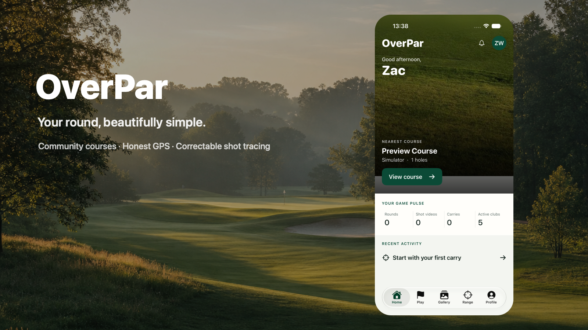
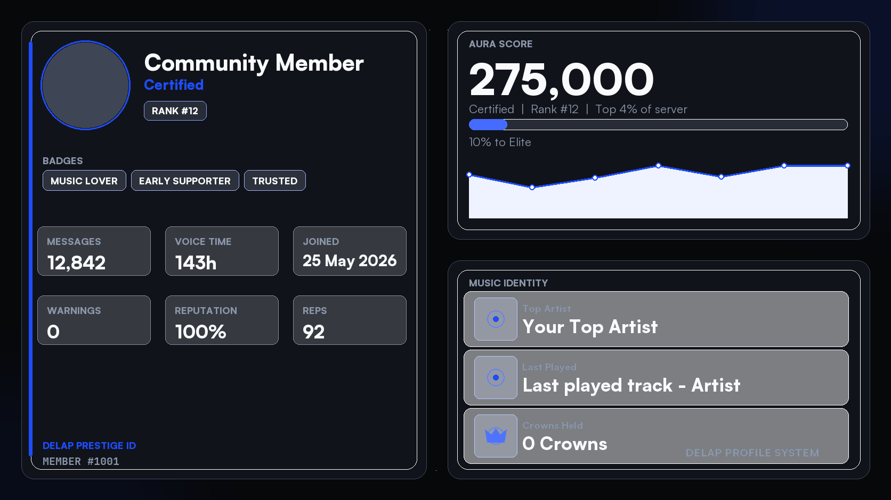
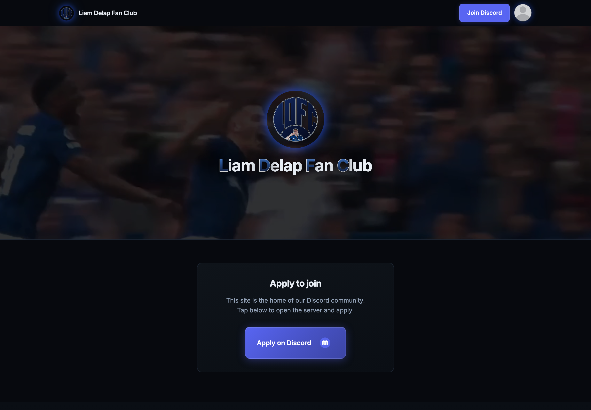

Hello, I’m
Zac
Whittaker.
A place for the work I’ve done, the things I’m interested in, and whatever comes next.
View the portfolioThink clearly
Make thoughtfully
Stay curious
About
Product thinking. Design craft. Working software.
I’m Zac, a UK-based product designer and developer building thoughtful digital products across web, native iOS and community platforms.
I work from early product direction through interface design and implementation, using Codex throughout the process. I care about clear thinking, dependable systems and details that make software feel considered rather than generic.
- Based
- United Kingdom
- Currently
- Building independent products
- Open to
- Good ideas & new opportunities
Selected work
Built with curiosity. Shipped with care.
Three products spanning native mobile, community platforms and automation—each designed and built through close collaboration with Codex.

OverPar
A privacy-minded golf companion for course mapping, honest GPS distances, resilient rounds, club learning and correctable shot tracing.

LDFC Bot
A connected football and music community platform with profiles, reputation, games, moderation and resilient persistence.

LDFC Website
A responsive home for a Discord-native football community, with verified member profiles powered by Supabase and bot data.
Have something in mind?